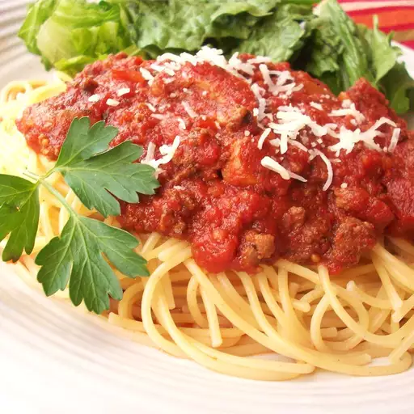

Meat-Lover's Slow Cooker Spaghetti Sauce

This crockpot spaghetti sauce creates a great, chunky,
and very meaty spaghetti sauce. The longer it cooks in
your slow cooker, the better it tastes! Boil up some pasta,
and dinner tastes like you spent all day at the stove!
Ingredients
- 2 tablespoons olive oil
- ¼ pound bulk Italian sausage
- 2 small onions, chopped
- 1 pound ground beef
- 1 teaspoon dried Italian herb seasoning
- 1 teaspoon garlic powder
- ½ teaspoon dried marjoram
- 1 (29 ounce) can tomato sauce
- 1 (14.5 ounce) can Italian-style diced tomatoes
- 1 (14.5 ounce) can Italian-style stewed tomatoes
- 1 (6 ounce) can tomato paste
- 2 teaspoons garlic powder
- ½ teaspoon dried oregano
- ¼ teaspoon dried thyme leaves
- ¼ teaspoon dried basil
- 1 tablespoon white sugar
Steps
- Heat olive oil in a skillet over medium heat.
Add Italian sausage and onion; cook and stir until
sausage is browned, about 10 minutes. Transfer sausage
and onions to a slow cooker.
- Add ground beef to the same skillet over medium heat;
season with Italian seasoning, 1 teaspoon of garlic powder,
and marjoram. Cook and stir until beef is browned and crumbly,
about 10 minutes. Transfer ground beef into the slow cooker.
- Stir in tomato sauce, diced tomatoes, stewed tomatoes,
tomato paste, 2 teaspoons garlic powder, oregano, thyme,
and basil. Cover and cook on Low for 8 hours. Stir in sugar
15 minutes before serving.